|
ZRAK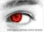
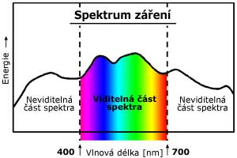
Zrak je nejdůležitějším smyslem člověka. Získáváme jím asi 80% informací z okolí.
Příjmem a zpracováním vizuálních informací se účastní více než 100 milionů receptorových
buněk v sítnici. S mozkem je spojuje asi
1 600 000 nervových vláken.
Adekvátním podnětem pro lidské oko je světelné záření o vlnové délce
400-800nm - tzv. viditelná část spektra.
Jsme schopni registrovat:
- velikost, barvu a tvar předmětů
- směr a rychlost pohybu předmětů
- vzdálenosti
Stavba oka.
Oko je párový orgán uložený v orbitě.
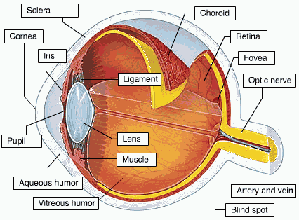
1.Bělima (sclera). Vazivová blána tvořící vnější vrstvu oka. V přední části přechází v
průhlednou rohovku (cornea). Povrch je chráněn vrstvou slz ze slzných žláz.
2. Cévnatka (choroidea). Tvoří vnitřní stěnu oční koule. Obsahuje pigment zabraňující
rozptylu světla uvnitř oka. Je protkána cévami zásobujícími zevní vrstvy sítnice. V předu
přechází v prstenec z hladkých svalů a vaziva (řasnaté těleso), jehož funkcí je změna
zakřivení čočky.
3. Duhovka (iris). Kruhový terčík hladkého svalstva uprostřed s kruhovým otvorem
(zornice - pupila - panenka). Odstupuje od řasnatého tělesa. Upravuje množství světla dopadajícího
na sítnici pomocí změn průměru zornice. V epitelu na povrchu jsou uloženy buňky
obsahující pigment.
4. Čočka (lens). Je zavěšena na vazivových vláknech vycházejících z řasnatého tělesa.
Tvoří ji rosolovitá, dokonale průhledná hmota, pokrytá jemným vazivovým pouzdrem.
Uvolněním tahu závěsných vláken řasnatého tělesa se čočka vyklenuje, čímž mění svou ohniskovou vzdálenost a oko tak zaustřuje na blízké předměty.
(akomodace oka)
5. Sklivec. Rosolovitá průhledná hmota. Vyplňuje oční kouli.
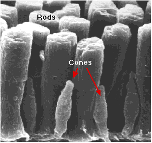 6. Sítnice (retina). Nejvnitřnější vrstva oka. Pokrývá zadní dvě třetiny, s výjimkou
vývodu zrakového nervu (slepá skvrna). V ní jsou obsaženy vlastní optické receptory. Jsou
to tyčinky a čípky.
Tyčinky - zaznamenávají i velmi malé množství světla. Nejsou schopny zjistit barvu světla.
Nejvíce jich je na okrajích sítnice.
Čípky - pomocí nich rozlišujeme barvy. Jsou aktivní jen od určité úrovně osvětlení. Nejvíce
jich je v tzv. žluté skvrně.
V slepé skvrně (místo odstupu zrakového nervu) nejsou ani tyčinky ani čípky.
V sítnici jsou obsaženy i dvě vrstvy neuronů, což dovoluje primární zpracování
vjemu již před vstupem do zrakových center v týlním laloku mozkové kůry.
Tyčinky obsahují pigment rhodopsin, citlivý na světlo. Osvětlený ztrácí barvu, bledne
a rozpadá se na opsin, bezbarvý protein, a na retinal, což je derivát vitamínu A.
Tento
rozpad je počátkem dějů které vedou ke vzniku akčních potenciálů. Později se z nich
zpětně syntetizuje rhodopsin. Ve tmě se jeho koncentrace zvyšuje - adaptace na tmu.
Čípky jsou trojího druhu. Každý je citlivý na jednu ze základních barev.
Jak oko funguje.
Funkce oka
Oční vady.
KRÁTKOZRAKOST
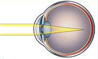
Nejčastější oční vada, postihuje 30% obyvatel. Postižený vidí dobře na blízko, špatně na dálku.
Důvod je buď příliš protáhlá oční koule nebo velká lomivost optické soustavy. Náprava: rozptylná skla nebo kontaktní čočky.
DALEKOZRAKOST
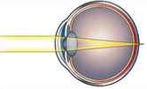
Dalekozrakost postihuje asi 10% populace. Je to opak krátkozrakosti. Oko je příliš krátké, nebo lomivost soustavy malá.
Náprava spojkami.
ASTIGMATISMUS
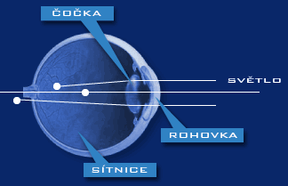
Neschopnost zaostřit na žádnou vzdálenost. Příčinou je nepravidelný tvar rohovky (rohovka není přesná výseč koule).
Náprava tórickými skly.
PRESBYOPIE
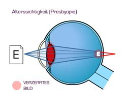
Stařecké vidění - neschopnost ostřit na blízké předměty, spojeno s věkem a postupnou ztrátou pružnosti čočky.
Další onemocnění zraku
šedý zákal - katarakta
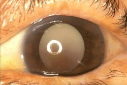
Onemocnění oční čočky, ktará ztrácí svou skelnou průhlednost a stává se podobná matnému sklu.
Vidění neostré, zamlžené.
Příznaky - zhoršené vidění na dálku i na blízko, brýle nepomáhají.
Léčba - vyjmutí postižené čočky a vložení čočky umělé.
zelený zákal - glaukom
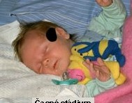
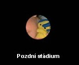
Těžké onemosnění způsobené zvyšujícím se tlakem nitrooční tekutiny a následným poškozováním zrakového nervu.
Zelený podle zabarvení čočky a duhovky v posledních stádiích onemocnění.
Barvoslepost
nejčastějším typem je tzv. Daltonismus, tj. neschopnost rozeznat červenou a zelenou barvu.
Šeroslepost
Špatná fce zraku za snížených světelných podmínek. Šeroslepý člověk vidí za šera jako normální ve tmě.
Zánět spojivkového vaku
často spojený s alergiemi.
Péče o zrak
- Optimálním uspořádáním pracovního prostředí
- Vhodným osvětlením
- Barevnými kontarsty
- Střídání zrakové práce z blízka a na dálku
- Správné a kvalitní brýle
- Pravidelné kontroly u lékaře
Zajímavoszi o zraku
- Úrazy očí jsou až 4x častější u mužů než u žen
- Ženy trpí více slzením nebo pocitem suchých očí více než muži
- Některé kapky na léčbu zeleného zákalu podporují při delším užívání růst řas, proto je možno někdy slyšet pojem farmakologická řasenka.
- V průběhu menstruačního cyklu se mění množství slz i jejich složení
- Slzy jsou účinným antiseptickým činidlem - obsahují lysozym.
- Historie brýlí
|
Motivační otázky
Proč nevidíme v noci?
Proč za šera vidíme jen černobíle?
Proč když přijdeme ze světla do tmy se musíme "rozkoukat"?
Může člověk s jedním okem vidět prostorově?
Může člověk postižený daltonismem řídit auto?
Co je tzv. periferní vidění?
Proč za tmy vidíme předměty lépe, když se na ně nedíváme přímo, ale periferně?
Proč se některým živočichům lesknou v noci oči, když na ně dopadne světlo?
Proč nám nekvalitní sluneční brýle (sluneční) mohou poškodit zrak?
Je nutno pro získání řidičského průkazu absolvovat zkoušku funkčnosti zraku u lékaře?
Testy
Odkazy na externí weby
Praktická cvičení
Otázky k opakování
Jaké jsou hlavní součásti lidského oka?
Co tvoří optické součásti oka?
Kde převážně jsou na sítnici rozmístěny tyčinky?
Kde převážně jsou na sítnici rozmístěny čípky?
Kde na sítnici vůbec nejsou světločivé buňky?
Jaké jsou nejčastější vady oka a možnosti jejich korekce?
Co rozumíme pod pojmem "adaptace zraku"?
Co je rodopsin a jaký vztah k němu má vitamín A?
Co je akomodace oka?
Jaké jsou hlavní zásady péče o zrak?
Jaké vlnové délky má viditelná část spektra - porovnej s vlnovými délkami potřebnými pro fotosyntézu.
|